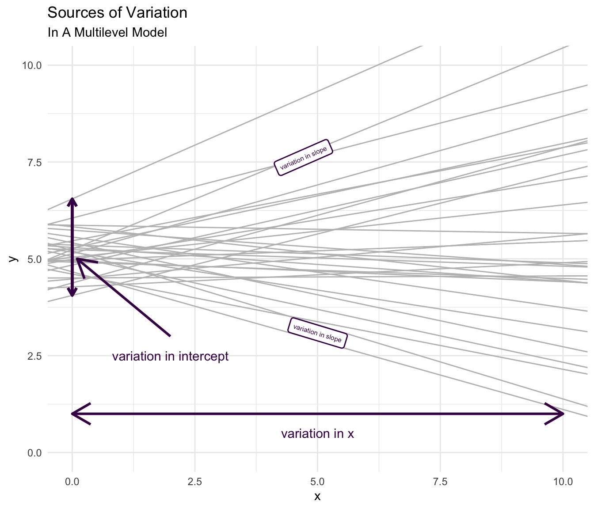

6 The Cross Sectional Multilevel Model
6.1 The Equation
The equation for the multilevel model can be written in several ways: as multiple levels of equations; or as a single equation. The advantage of having multiple levels of equations is that these multiple equations make clear the multiple levels of the data, and thus conform to an initial understanding of how a multilevel model should be estimated. However, results from multiple levels of equations quickly become difficult to interpret, and thus, I will not spend a great deal of time on discussing empirical results of the two level formulation. Whether multiple levels of equations, or a single equation are employed, the numerical results are the same.
6.1.1 Two Levels of Equations
I start with two levels of equations: Level 1 at the level of the individual; and Level 2 at the level of the country.
6.1.1.1 Level 1 (Individuals)
\[y_{ij} = \beta_{0j} + \beta_{1j} x_{ij} + \beta_{2j} z_{ij} + e_{ij} \tag{6.1}\]
6.1.1.2 Level 2 (Countries)
\[\beta_{0j} = \gamma_{00} +\gamma_{01} w_j + u_{0j} \tag{6.2}\]
\[\beta_{1j} = \gamma_{10} + u_{1j}\]
\[\beta_{2j} = \gamma_{20}\]
\[\beta_{3j} = \gamma_{30}\]
Here \(y_{ij}\) is the dependent variable, or outcome for the model. We note that the \(ij\) subscripts indicate that this is outcome \(y\) for individual \(i\) in country \(j\). Note that the outcome is at Level 1, or the level of individuals. \(\beta_{0j}\) is a regression intercept, and the other \(\beta\)’s1 are regression slope parameters. \(x_{ij}\) and \(z_{ij}\) are independent variables and \(t_{ij}\) is an independent variable indicating the time at which different data points are measured. I note that in this discussion I am not considering a model in which there are repeated observations on the same individuals, although the multilevel model is certainly extensible to such cases. \(u_{0j}\) is a random intercept for the \(\beta_{0j}\) term, and \(u_{1j}\) is a random slope for the \(\beta_{1j}\) term, indicating that we are modeling cross country variation in these parameters. The other \(\beta\) terms are not modeled as having random country level variation, although this could certainly be a possibility in subsequent models.
In this formulation of the multilevel model, each regression parameter \(\beta\) in the level 1 equation is the outcome of an equation at Level 2. The parameters for the Level 2 equations are represented by \(\gamma\)’s. \(w\) a Level 2 variable appears in the first Level 2 equation.
6.1.2 One Level of Equations
By simply substituting the values of the Level 2 equations into the Level 1 equations, we obtain:
\[y_{ij} = \beta_0 + \beta_1 x_{ij} + \beta_2 z_{ij} + \beta_3 w_{j} + u_{0j} + u_{1j} \times x + e_{ij} \tag{6.3}\]
Here again \(y_{ij}\) is the dependent variable, or outcome for the model. \(\beta_0\) is a regression intercept, and the \(\beta\)’s are regression parameters. \(x_{ij}\) and \(z_{ij}\) are independent variables and \(w\) is a Level 2 variable.
While I purposely strive to keep the discussion of multilevel modeling ideas somewhat general in this document, I generally think of \(y_{ij}\) as a desirable or “good” outcome. \(x\) is often conceptualized as a protective factor, while \(z\) is often conceptualized as a risk factor.
Notice that in this single equation format all variables–no matter their level–appear in the same equation.
In this formulation of the equation, the nature of the random effects is more clear, and merits discussion. Notice that we have included a random intercept \(u_{0j}\) as well as a random slope \(u_{1j} \times x\). The random intercept, \(u_{0j}\), indicates that there is variation in the intercept of the country specific regression lines, as is true in Figure 3.2. The random slope term associated with \(x\), \(u_{1j} \times x\), indicates that there is also variation in the slope of the regression lines that is associated with \(x\), in this case, the slope of parental warmth, as is also demonstrated in Figure 3.2.
To make these ideas more concrete, I rewrite this equation in terms of the main substantive ideas of this document:
\[\text{outcome}_{ij} = \beta_0 + \beta_1 \text{parental warmth}_{ij} + \beta_2 \text{physical punishment}_{ij} + \beta_3 \text{group}_{ij} + \beta_4 \text{HDI}_{j} \ + \tag{6.4}\]
\[u_{0j} + u_{1j} \times \text{parental warmth} + e_{ij}\]
Drawing upon ideas from Chapter 4, this single level equation can be easily represented in Stata syntax.
mixed outcome warmth physical_punishment group HDI || country: warmth
6.2 Estimating Standard Errors And p Values
6.2.1 Introduction
If the data are grouped, nested, or clustered, then this aspect of the structure of the data needs to be accounted for. Bland & Altman (1994) describe a simulation in which grouped data are artificially generated according to the following procedure.
“The data were generated from random numbers, and there is no relation between X and Y at all. Firstly, values of X and Y were generated for each ‘subject,’ then a further random number was added to make the individual observation.” (Bland & Altman, 1994)
The graph below illustrates the process of simulating the data.

6.2.2 Compare OLS and MLM
An analysis that is not aware of the grouped nature of the data will give biased results, will mis-estimate standard errors, and importantly, will often attribute statistical significance to some of the independent variables when this is not appropriate (Bland & Altman, 1994; Raudenbush & Bryk, 2002).
In the example below, we compare a simple ordinary least squares analysis of the data with a multilevel model that accounts for the clustered nature of the data.
The Stata syntax that we use for each analysis is:
- OLS:
regress y x - Multilevel Model:
mixed y x || group:
| OLS | MLM | |||
|---|---|---|---|---|
| x | 1.046 | ** | 0.039 | |
| Intercept | 4.488 | 97.005 | ** | |
| var(_cons) | 74.523 | |||
| var(e) | 0.594 | |||
| Number of observations | 25 |
** p<.01, * p<.05
We see that in the ordinary least squares analysis, the independent variable is judged to have a statistically significant association with the dependent variable. The more appropriate multilevel model finds that in fact the independent variable \(x\) is not associated with \(y\). Thus, the multilevel model provides more accurate results than OLS in the presence of clustered data.
6.3 Multilevel Structure
Associations between two variables can be very different (or even reversed) depending upon whether or not the analysis is “aware” of the grouped, nested, or clustered nature of the data (Gelman et al., 2007). In the example presented here, the groups are countries, but could as easily be neighborhoods, communities, or schools.
For pedagogical purposes, I use an example with very few clusters, although it would be more appropriate to apply multilevel analysis to an example with many more clusters e.g. (\(N_\text{clusters} >= 30\))
A model that is “aware” of the clustered nature of the data may provide very different–likely better–substantive conclusions than a model that is not aware of the clustered nature of the data.
6.3.1 Use Some Data Simulated For This Particular Example
6.3.2 Graphs
6.3.2.1 A “Naive” Graph
This “naive” graph is unaware of the grouped nature of the data. Notice that the overall regression line slopes downward, even though there is some suggestion that within each group the regression lines may slope upward.
6.3.2.2 An “Aware” Graph
This “aware” graph is aware of the grouped nature of the data. The graph is “aware” of the grouped or clustered nature of the data, and provides indication that the regression lines when accounting for group slope upward.
6.3.3 Regressions
6.3.3.1 A “Naive” OLS Analysis vs. An “Aware” MLM Analysis
The Stata syntax that we use for these analyses is:
- OLS:
regress y x - Multilevel Model:
mixed y x || country:
The OLS model with only x as a covariate is not aware of the grouped structure of the data, and the coefficient for x in the OLS model reflects this. The coefficient for x in the OLS model is negative, and statistically significant.
The multilevel model is aware of the grouped structure of the data, and the coefficient for x in the multilevel model reflects this. The coefficient for x in the multilevel model is positive, and statistically significant.
| OLS | MLM | |||
|---|---|---|---|---|
| x | -0.775 | ** | 1.038 | ** |
| Intercept | 57.133 | ** | 29.029 | ** |
| var(_cons) | 276.867 | |||
| var(e) | 0.916 | |||
| Number of observations | 30 |
** p<.01, * p<.05
6.3.4 A Thought Experiment
When might a situation like this arise in practice? This is surprisingly difficult to think through.
Imagine that x is a protective factor, or an intervention or treatment. Imagine that y is a desirable outcome, like improved mental health or psychological well being.
Now imagine that residents of countries provide more of the protective factor or more of the intervention in situations where there are lower levels of the desirable outcome. If one thinks about it, this is a very plausible situation.
A naive analysis that was unaware of the grouped nature of the data would therefore misconstrue the results, suggesting that the intervention was harmful, when it was in fact helpful.
These data are constructed to provide this kind of extreme example, but it easy to see how multilevel thinking, and multilevel analysis may provide better answers than one would get if one ignored the grouped nature of the data.
6.4 Regression With Simulated Multi-Country Data
After considering some of these broader issues, let’s now examine the results of a multilevel regression with the simulated multicountry data. I will again imagine that the desirable outcome is an outcome such as improved psychological wellbeing.
The Stata syntax that we use is:
mixed outcome warmth physical_punishment group HDI || country: warmth
| cross_sectional | ||
|---|---|---|
| warmth | 0.983 | ** |
| physical_punishment | -0.924 | ** |
| group | ||
| 2 | 0.728 | ** |
| HDI | 0.008 | |
| Intercept | 51.500 | ** |
| var(warmth) | 0.000 | |
| var(_cons) | 3.438 | |
| var(e) | 34.784 |
** p<.01, * p<.05
The data suggest that parental warmth is positively associated with the desirable outcome, and that this result is statistically significant. Parental use of physical punishment is associated with statistically significant decreases in the desirable outcome. I note that there is some variation in the constant indicating that there is some variation in the initial or average levels of the desirable outcome–again improved psychological well-being–that is attributable to country.
There is–in contrast–no discernible variation in the slope associated with parental warmth that is attributable to country. Thus, the relationship of parental warmth with child outcomes does not appear to differ appreciably from country to country.
HDI, the Human Development Index, our only country level, or Level 2, variable in this model is not associated with the outcome.
6.5 Correlation of Random Intercept and Random Slope(s)
One could also consider a situation in which a random slope or slopes were correlated with each other, and with the random intercept. In the equation that we are considering, this would entail estimation of whether or not, the random intercept, \(u_{0j}\), was correlated with the random slope for warmth, \(u_{1j}\).
Substantively, this question would be asking whether the association of warmth and the outcome, was correlated with the initial level or average level of the outcome. From Figure 3.2, it appears that there is some slight evidence that the country specific regression slopes are more steep in countries where the initial level of the outcome is higher. However, we may wish to investigate this question more rigorously.
By default, Stata estimates models, where the random slope or slopes are uncorrelated with each other, and uncorrelated with the intercept (StataCorp, 2021). We see this in Equation 6.5 below, where the diagonal elements are the variances of each of the random effects, and the off diagonals, which would be the covariances of the random effects are constrained to 0.
\[\begin{bmatrix} var(u_{0j}) & 0 \\ 0 & var(u_{1j}) \end{bmatrix} \tag{6.5}\]
Within Stata, we can ask to allow such a correlation with the cov(uns) option.
\[\begin{bmatrix} var(u_{0j}) & cov(u_{0j}, u_{1j}) \\ cov(u_{0j}, u_{1j}) & var(u_{1j}) \end{bmatrix} \tag{6.6}\]
We use the following syntax.
mixed outcome warmth physical_punishment group HDI || country: warmth, cov(uns)
When we estimate such a model, we get the following information.
| cross_sectional2 | ||
|---|---|---|
| warmth | 0.983 | ** |
| physical_punishment | -0.926 | ** |
| group | ||
| 2 | 0.727 | ** |
| HDI | 0.007 | |
| Intercept | 51.523 | ** |
| var(warmth) | 0.002 | |
| var(_cons) | 2.982 | |
| cov(warmth,_cons) | 0.086 | |
| var(e) | 34.769 |
** p<.01, * p<.05
Results are mostly similar to those above. However, here, we are asking additionally for information about the possible correlation of country specific initial levels of the outcome and the slope of the country specific regression line for parental warmth. Results indicate that there is no reason to be believe that these two parameters are correlated. Put more intuitively, it does not appear that parental warmth is any more or less correlated with the outcome in countries where initial levels of the outcome are higher.
6.6 Summary of Advantages Of The Multilevel Model
The discussion so far gives an idea of the advantages of the multilevel model for studying intrinsically multilevel data: children in classrooms or schools; individuals or families in neighborhoods; individuals or families in countries. These advantages can be summarized below:
- Standard errors are estimated correctly as is statistical significance. This means that p values are correctly estimated accounting for the clustered or nested nature of the data. More colloquially, this most often means that we do not make the mistake of attributing statistical significance to a given risk or protective factor, when such a statistical significance is not warranted. Put even more straightforwardly correct estimation of standard errors and statistical significance prevents us from seeing results that are simply not present in the data, whether those concern risk factors or protective factors.
- Regression coefficients are estimated correctly accounting for the clustered or nested structure of the data. If one does not account for the clustered or nested structure of the data, regression slopes can be estimated as negative when they are more correctly estimated as positive, or as null, or conversely estimated as positive when there are more correctly seen as negative (or null). Again, to phrase things in a more colloquial fashion, this means that we do not judge something to be a risk factor when it is in fact a protective factor or a null effect; or a protective factor when it is in fact a risk factor, or a null effect.
- An increasing focus of statistical estimation is not to focus on particular regression parameters, but instead to predict outcomes for particular combinations of independent variables. Predictions from a multilevel model could be said to be best predictions in that groups are weighted by their precision, contributing to an estimate which makes better predictions than would a simple average. More colloquially, multilevel models allow us to predict outcomes better and more accurately than would be possible with simple or more naïve models.
6.7 Predicted Values
According to “Stein’s Paradox”, predictions from a multilevel model may be better than the mean.
shrinkage
6.8 Variation
Above, in Section 2.6, I have referred to multilevel models as the study of variation. Now that I have provided some discussion of the multilevel model, more statistical “unpacking” of ideas about variation is warranted.
I provide again, for pedagogical purposes, the example substantive equation that I have been using in this document.
\[\text{outcome}_{ij} = \beta_0 + \beta_1 \text{parental warmth}_{ij} + \beta_2 \text{physical punishment}_{ij} + \beta_3 \text{time}_{ij} \ + \tag{6.7}\]
\[u_{0j} + u_{1j} \times \text{parental warmth} + e_{ij}\]
6.8.1 Measured and Unmeasured Variation
The first thing to note about the equation is that it can be divided into measured and unmeasured variation.
This is most easily seen if we introduce the idea of an unconditional model.
6.8.2 Unconditional Model
The unconditional model is a model with no \(x\)’s or covariates (Raudenbush & Bryk, 2002).
\[\text{outcome}_{ij} = \beta_0 + u_{0j} + e_{ij} \tag{6.8}\]
Here, \(\text{outcome}_{ij}\) is a function of an intercept \(\beta_0\), a country specific error term, \(u_{0j}\), and an individual level error term \(e_{ij}\).
Thus, all of the variation in \(\text{outcome}_{ij}\) is–given the unconditional nature of our model–due to unmeasured variation at the country and individual level.
6.8.3 Intra-Class Correlation Coefficient
I now introduce a measure known as the Intra-Class Correlation Coefficient, (ICC) that can be computed from this unconditional model (Raudenbush & Bryk, 2002).
\[\text{ICC} = \frac{var(u_{0j})}{var(u_{0j}) + var(e_{ij})} \tag{6.9}\]
Heuristically:
\[\text{ICC} = \frac{\text{group level variation}}{\text{group level variation} + \text{individual level variation}} \tag{6.10}\]
The ICC from the unconditional model (Equation 6.8) is the most informative ICC as it represents the amount of variation in the dependent variable that could potentially be explained by the grouping variable.
As we add covariates, \(x\)’s, to the model the ICC will most often decrease.

6.8.4 Variation In Intercepts or Outcomes
In Equation 6.7, \(var(u_{0j})\) is the model estimated amount of variation in the outcome, \(y_{ij}\).
In the regression in Section 6.4, there is discernible between country variation, but more of the variation is between individuals within the same country. Put another way, there is a moderate tendency for children in families in the same country to have similar outcomes, but two children in families in the same country may also have very different outcomes. Children from families in different countries may be as similar as children from families in the same country.
6.8.5 Variation In Predictors
Equally important, I think, but much less frequently explored than variation in outcomes, is the possibility of variation in predictors. In the substantive example that we have employed so far, the predictors are different parenting behaviors, so considering variation in predictors allows us to consider variation in parenting behaviors, as well as variation in the outcomes of those behaviors.
We would estimate variation in behaviors in much the same way that we would estimate variation in outcomes, estimating an unconditional model, but substituting \(x\) for \(y\).
\[x_{ij} = \beta_0 + u_{0j} + e_{ij} \tag{6.11}\]
Then, similarly, the variation in a predictor attributable to the clustered nature of the data–in this case the clustering of individuals in countries–is given by:
\[\text{ICC}_x = \frac{var(u_{0j})}{var(u_{0j}) + var(e_{ij})} \tag{6.12}\]
6.8.6 Variation in Slopes
Another possible type of variation to investigate is variation in the relationship of \(x\) and \(y\), which is represented in the multilevel model by examining variation in the \(\beta\)’s.
6.8.7 Variation As An Outcome
Even less common is to examine variation itself as an outcome (Burkner, 2018).
\[\sigma_{yij} = \beta_0 + \beta_1 x_1 + u_{0j} + e_{ij} \tag{6.13}\]
Here, the variation in the outcome, \(\sigma_{yij}\), rather than the mean level of the outcome, \(y_{ij}\), is the focus of interest. My notation for Equation 6.13 draws upon Burkner (2018)’s notation, but is modified in order to be consistent with the rest of this document.
Why might such models be of conceptual interest? Imagine for example, that the variation in psychological well-being is higher in countries with higher levels of poverty, or higher levels of income inequality. The use of such models as this, discussed in more detail by Burkner (2018), would allow us to explore such a question.
Of note, while I do not explore in detail differences between Bayesian and frequentist approaches to multilevel modeling in this document, these models are likely to be only estimable with Bayesian software rather than with frequentist software (Burkner, 2018).
6.8.8 Maximal Models
Hypothetically, one might imagine that there could be group level unobserved factors which affect regression slopes—i.e. the relationship between a predictor x and outcome variable y—arguably, were one to ignore these unobserved factors in statistical estimation, they would show up either in an error term, or in the regression coefficients themselves. Were they to show up in the regression coefficients this would represent statistical bias and a substantive mis-estimation of important effects. thus, there is a conceptual argument for including as many random effects—i.e. random slopes—in a statistical model as possible.
Models with all possible random effects are termed maximal models (Barr et al., 2013; Frank, 2018). Such models include a large number of random slopes, e.g. \(u_1 \times x_1, u_2 \times x_2, u_3 \times x_3, ..., \text{etc.}\) even when some of those estimated slopes are close to 0. Such models may be more easily estimable when using Bayesian estimation (Frank, 2018), a topic which I do not cover in detail in this document.
It should be noted that Matuschek et al. (2017) argue that such a maximal approach may lead to a loss of statistical power and further argue that one should adhere to “a random effect structure that is supported by the data.” In contrast, Nalborczyk et al. (2019) argue that maximal models are supported under the Bayesian approach. Oberauer (2022) also argues for including multiple random slopes. Schielzeth & Forstmeier (2009) make a similar argument from a frequentist perspective.
6.9 Some Wrong (or Partially Wrong) Approaches
When data are clustered–e.g. residents in neighborhoods, children in schools, families in countries–it is worth discussing the fact that we have several choices statistically as how to proceed, other than using a multilevel model. Given the discussion so far, we can see the advantages of a multilevel model over these other approaches:
- First, we could simply ignore the clustering, and treat the data as though it were composed of statistically independent individuals, i.e. statistically independent \(e_i\). As we have discussed above, however, this approach has at least two disadvantages. First, as discussed in Section 6.2, this approach will mis-estimate standard errors, most often underestimating them, resulting in underestimated p values and false positives. Second, as discussed in Section 6.3 ignoring clustering runs the risk of estimating regression \(\beta\)’s that are not estimated with information about the multilevel structure of the data, with the possibility that \(\beta\) coefficients may not only have incorrect statistical significance, but also incorrect magnitude, and even incorrect sign.
- A second approach would be to aggregate the data to the level of the higher social unit, e.g. aggregating the data at the level of the neighborhood. Here we run into an idea similar to that discussed in Section 6.3, the “ecological fallacy”: the idea that group level and individual level relationships are necessarily the same (Firebaugh, 2001).
- Lastly, we could adopt a statistical strategy of clustering the standard errors. Clustering the standard errors means that standard errors are corrected for the non-independence of the \(e_i\) within clusters. Thus, p values are estimated correctly. However, clustering still does not account for the multilevel structure of the data (Section 6.3), and thus when relationships between x’s and y at different levels of the data are very different, simply clustering the standard errors may not give correct estimates of the \(\beta\)’s.
Technically, all of these \(\beta\)’s could be written as \(\beta_j\) since the multilevel model could be said to estimate a regression parameter for each group, in this case each country. One could even write \(\beta_{jk}\) to represent the regression parameter for the \(k^{th}\) independent variable the for the \(j^{th}\) group or country. To keep matters simple, I simply write \(\beta\) in most cases.↩︎